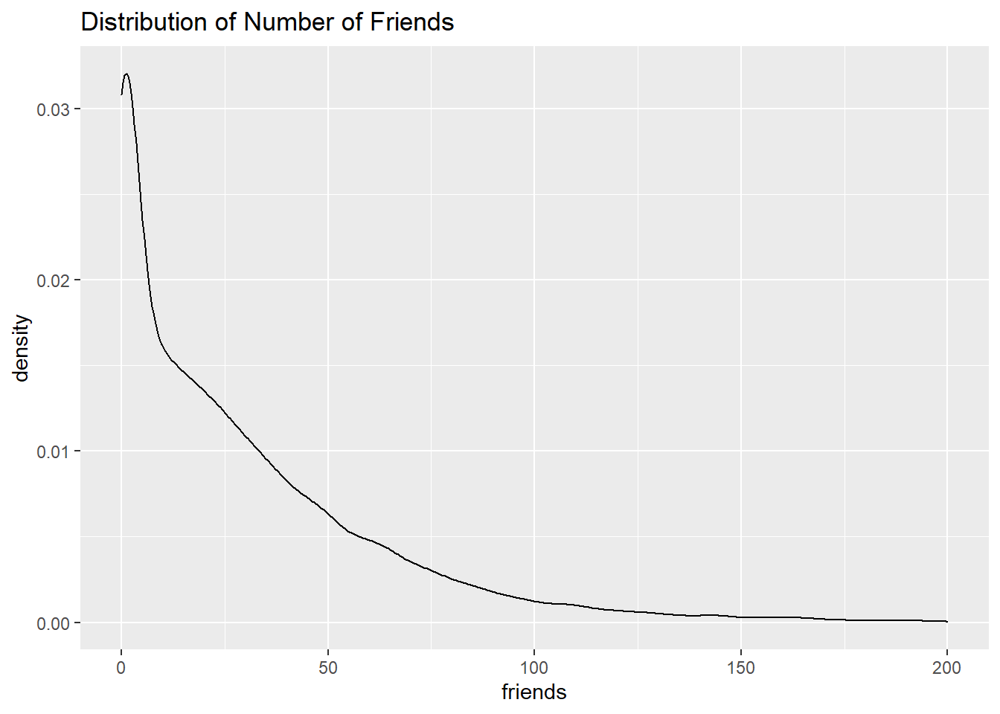

2 Exploratory Data Analysis
2.1 distribution of gender
sns %>% group_by(gender) %>% summarise(number=n())## # A tibble: 3 x 2
## gender number
## * <fct> <int>
## 1 F 22054
## 2 M 5222
## 3 <NA> 2724- High proportion of females compared to males
2.2 Distribution of No. of Friends
ggplot(data = sns,aes(x=friends))+geom_density()+ xlim(c(0,200))+ggtitle("Distribution of Number of Friends")## Warning: Removed 136 rows containing non-finite values (stat_density). * Most have friends from 1-50, while 100 or more is rare
2.3 converting grad year into factor variable
sns$gradyear <- factor(sns$gradyear)2.4 converting categorical variable into numeric(one-hot encoding) using mltools package
2.5 removing rows containing NAs
sns <- data.table(sns)
sns_new <- sns[complete.cases(sns),]
sns_new <- one_hot(sns_new,sparsifyNAs = T)
str(sns_new)## Classes 'data.table' and 'data.frame': 24005 obs. of 44 variables:
## $ gradyear_2006: int 1 1 1 1 1 1 1 1 1 1 ...
## $ gradyear_2007: int 0 0 0 0 0 0 0 0 0 0 ...
## $ gradyear_2008: int 0 0 0 0 0 0 0 0 0 0 ...
## $ gradyear_2009: int 0 0 0 0 0 0 0 0 0 0 ...
## $ gender_F : int 0 1 0 1 1 0 1 1 1 1 ...
## $ gender_M : int 1 0 1 0 0 1 0 0 0 0 ...
## $ age : num 19 18.8 18.3 18.9 18.9 ...
## $ friends : int 7 0 69 0 72 17 52 39 8 21 ...
## $ basketball : int 0 0 0 0 0 0 0 0 0 0 ...
## $ football : int 0 1 1 0 0 0 0 0 0 1 ...
## $ soccer : int 0 0 0 0 0 0 0 0 0 0 ...
## $ softball : int 0 0 0 0 0 1 0 0 0 0 ...
## $ volleyball : int 0 0 0 0 0 0 0 0 0 0 ...
## $ swimming : int 0 0 0 0 0 0 0 0 0 0 ...
## $ cheerleading : int 0 0 0 0 0 0 0 0 0 0 ...
## $ baseball : int 0 0 0 0 0 0 0 0 0 0 ...
## $ tennis : int 0 0 0 0 0 0 0 0 0 0 ...
## $ sports : int 0 0 0 0 0 0 0 0 0 0 ...
## $ cute : int 0 1 0 1 0 0 0 1 0 0 ...
## $ sex : int 0 0 0 0 0 2 0 0 0 0 ...
## $ sexy : int 0 0 0 0 0 1 0 0 0 0 ...
## $ hot : int 0 0 0 0 0 0 0 1 0 0 ...
## $ kissed : int 0 0 0 0 0 0 0 0 0 0 ...
## $ dance : int 1 0 0 0 0 0 0 0 0 0 ...
## $ band : int 0 0 2 0 1 0 0 0 0 0 ...
## $ marching : int 0 0 0 0 1 0 0 0 0 0 ...
## $ music : int 0 2 1 0 0 1 0 1 0 0 ...
## $ rock : int 0 2 0 1 0 1 0 1 0 0 ...
## $ god : int 0 1 0 0 0 0 0 6 0 0 ...
## $ church : int 0 0 0 0 0 0 0 0 0 1 ...
## $ jesus : int 0 0 0 0 0 0 0 2 0 0 ...
## $ bible : int 0 0 0 0 0 0 0 0 0 0 ...
## $ hair : int 0 6 0 0 0 0 0 1 0 0 ...
## $ dress : int 0 4 0 0 0 0 0 0 0 0 ...
## $ blonde : int 0 0 0 0 0 0 0 0 0 0 ...
## $ mall : int 0 1 0 0 2 0 0 0 0 0 ...
## $ shopping : int 0 0 0 0 0 0 0 1 0 0 ...
## $ clothes : int 0 0 0 0 0 0 0 0 0 0 ...
## $ hollister : int 0 0 0 0 2 0 0 0 0 0 ...
## $ abercrombie : int 0 0 0 0 0 0 0 0 0 0 ...
## $ die : int 0 0 0 0 0 0 0 0 0 0 ...
## $ death : int 0 0 1 0 0 0 0 0 0 0 ...
## $ drunk : int 0 0 0 0 0 0 0 0 0 0 ...
## $ drugs : int 0 0 0 0 0 0 0 0 0 0 ...
## - attr(*, ".internal.selfref")=<externalptr>2.6 Removing age outliers
sns_new <- sns_new %>% filter(age>=13 & age <20)2.7 normalizing Profile’s interest variables
sns_int <- as.data.frame( apply(sns_new[,9:44],2,scale))
str(sns_int)## 'data.frame': 23602 obs. of 36 variables:
## $ basketball : num -0.34 -0.34 -0.34 -0.34 -0.34 ...
## $ football : num -0.371 1.012 1.012 -0.371 -0.371 ...
## $ soccer : num -0.245 -0.245 -0.245 -0.245 -0.245 ...
## $ softball : num -0.226 -0.226 -0.226 -0.226 -0.226 ...
## $ volleyball : num -0.223 -0.223 -0.223 -0.223 -0.223 ...
## $ swimming : num -0.261 -0.261 -0.261 -0.261 -0.261 ...
## $ cheerleading: num -0.21 -0.21 -0.21 -0.21 -0.21 ...
## $ baseball : num -0.206 -0.206 -0.206 -0.206 -0.206 ...
## $ tennis : num -0.17 -0.17 -0.17 -0.17 -0.17 ...
## $ sports : num -0.308 -0.308 -0.308 -0.308 -0.308 ...
## $ cute : num -0.41 0.821 -0.41 0.821 -0.41 ...
## $ sex : num -0.182 -0.182 -0.182 -0.182 -0.182 ...
## $ sexy : num -0.272 -0.272 -0.272 -0.272 -0.272 ...
## $ hot : num -0.267 -0.267 -0.267 -0.267 -0.267 ...
## $ kissed : num -0.204 -0.204 -0.204 -0.204 -0.204 ...
## $ dance : num 0.476 -0.367 -0.367 -0.367 -0.367 ...
## $ band : num -0.288 -0.288 1.552 -0.288 0.632 ...
## $ marching : num -0.146 -0.146 -0.146 -0.146 3.21 ...
## $ music : num -0.635 1.019 0.192 -0.635 -0.635 ...
## $ rock : num -0.343 2.353 -0.343 1.005 -0.343 ...
## $ god : num -0.357 0.39 -0.357 -0.357 -0.357 ...
## $ church : num -0.302 -0.302 -0.302 -0.302 -0.302 ...
## $ jesus : num -0.202 -0.202 -0.202 -0.202 -0.202 ...
## $ bible : num -0.11 -0.11 -0.11 -0.11 -0.11 ...
## $ hair : num -0.39 4.93 -0.39 -0.39 -0.39 ...
## $ dress : num -0.255 8.489 -0.255 -0.255 -0.255 ...
## $ blonde : num -0.0485 -0.0485 -0.0485 -0.0485 -0.0485 ...
## $ mall : num -0.376 1.021 -0.376 -0.376 2.418 ...
## $ shopping : num -0.497 -0.497 -0.497 -0.497 -0.497 ...
## $ clothes : num -0.319 -0.319 -0.319 -0.319 -0.319 ...
## $ hollister : num -0.201 -0.201 -0.201 -0.201 5.477 ...
## $ abercrombie : num -0.186 -0.186 -0.186 -0.186 -0.186 ...
## $ die : num -0.302 -0.302 -0.302 -0.302 -0.302 ...
## $ death : num -0.27 -0.27 1.99 -0.27 -0.27 ...
## $ drunk : num -0.224 -0.224 -0.224 -0.224 -0.224 ...
## $ drugs : num -0.177 -0.177 -0.177 -0.177 -0.177 ...